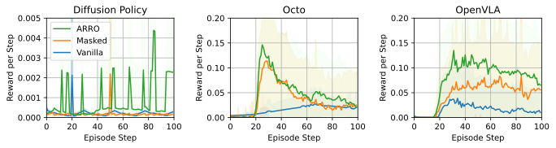

OpenVLA Vanilla
❌
OpenVLA ARRO
✅

Visuomotor policies trained on human expert demonstrations have recently shown strong performance across a wide range of robotic manipulation tasks. However, these policies remain highly sensitive to domain shifts stemming from background or robot embodiment changes, which limits their generalization capabilities. In this paper, we present ARRO, a novel calibration-free visual representation that leverages zero-shot open-vocabulary segmentation and object detection models to efficiently mask out task-irrelevant regions of the scene without requiring additional training. By filtering visual distractors and overlaying virtual guides during both training and inference, ARRO improves robustness to scene variations and reduces the need for additional data collection. We extensively evaluate ARRO with Diffusion Policy on several tabletop manipulation tasks in both simulation and real-world environments, and further demonstrate its compatibility and effectiveness with generalist robot policies, such as Octo and OpenVLA. Across all settings in our evaluation, ARRO yields consistent performance gains, allows for selective masking to choose between different objects, and shows robustness even to challenging segmentation conditions.
Visuomotor policies trained through imitation learning often fail to generalize across visual domain shifts. Minor changes in background, lighting, or robot appearance at test time can lead to substantial performance drops.
In the example above, the robot learns to drop a cube into a box and close the lid. At inference, the same task is attempted in a visually altered scene, with changes in background, distractors, and robot embodiment. While standard policies break, ARRO filters out irrelevant content, retaining only the gripper, cube, and box, and overlays them on a structured virtual background. This abstraction makes ARRO robust to visual variation. To isolate the role of spatial cues, we also provide an ablation using a plain black background.
The Vanilla Diffusion Policy performs poorly under domain shifts due to its dependence on raw visual features. The Masked Diffusion Policy does better by removing distractors but still underperforms compared to ARRO, likely because it also removes useful cues. ARRO outperforms both by filtering out irrelevant information while restoring a consistent background, leading to improved robustness and generalization.
In this setup, the robot receives a natural language instruction: “Push the blue cube that is farther from the yellow cube to the red cross.” Executing this task requires spatial reasoning and grounding language in the visual scene. Standard visuomotor policies often fail when the scene layout changes or distractors are present. ARRO addresses this by abstracting away irrelevant regions and retaining only the gripper and target object. This abstraction supports robust relational reasoning. As shown above, ARRO generalizes zero-shot to new configurations, succeeding in both left/right and closer/farther variants without additional training.
In this visualization, we zoom into two visually rich tasks. Despite the presence of rich textures, non-rigid shapes, and occlusion, ARRO's segmentation module consistently identifies and preserves the task-relevant components: the gripper and manipulable objects. This robustness in visual abstraction enables generalist policies to execute precise actions even in the presence of complex, unfamiliar visual elements—without any additional training or fine-tuning.
To assess how well our ARRO policies generalize across different robotic embodiments, we trained them on the FR3 robot in simulation and evaluated their performance on a distinct UR5e embodiment. While baseline diffusion policies suffered a complete performance collapse when transferred, ARRO and masked variants demonstrated strong cross-embodiment generalization with only minor reductions in success rates. This robustness is attributed to ARRO’s architecture, which masks embodiment-specific features and operates in a Cartesian control space, ensuring consistent behavior across varied physical forms. These results underscore ARRO's potential for scalable deployment across heterogeneous robotic platforms.
We evaluated Diffusion Policy, Octo, and OpenVLA for real-to-sim transfer on the pick-v2 task. While all models performed well in the real world, their success rates dropped sharply in simulation. OpenVLA with ARRO and black masking significantly outperformed its vanilla version, retaining strong performance across domains. As shown, ARRO enables successful task execution in sim and consistently higher rewards, highlighting its effectiveness in bridging real-to-sim gaps.
@article{mirjalili2025augmented,
title={{Augmented Reality for RObots (ARRO)}: {P}ointing Visuomotor Policies Towards Visual Robustness},
author={Mirjalili, Reihaneh and J{\"u}lg, Tobias and Walter, Florian and Burgard, Wolfram},
journal={arXiv preprint arXiv:2505.08627},
year={2025}
}